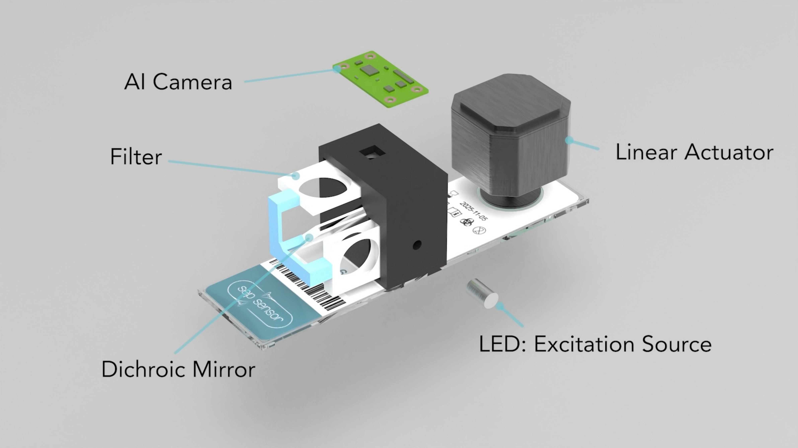
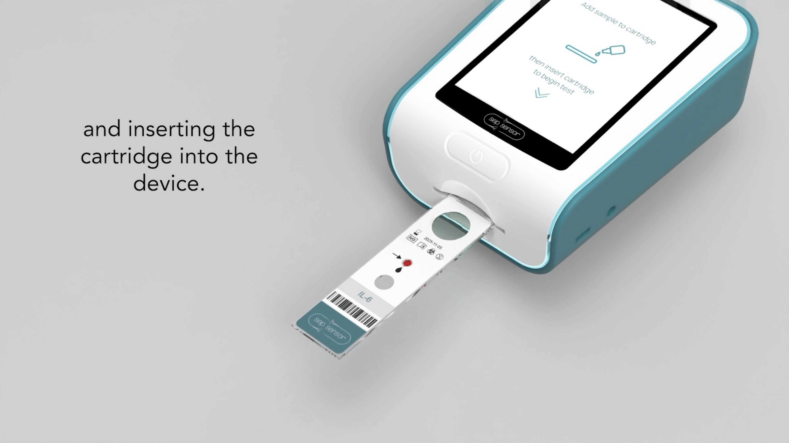

12 hours → 10 minutes.
Current IL-6 tests require central lab batch processing — a minimum 12-hour turnaround. Sepsensor delivers the same result in 10 minutes at the patient's bedside, in the same timeframe as taking vital signs.

Partner with usBedside sepsis diagnostics
Sepsensor is a self-calibrating optical biosensor that measures IL-6 — the earliest sepsis biomarker — in 10 minutes at the bedside. We're eliminating the central lab delay from the most time-critical decision in critical care.

Current IL-6 tests require central lab batch processing — a minimum 12-hour turnaround. Sepsensor delivers the same result in 10 minutes at the patient's bedside, in the same timeframe as taking vital signs.
The problem
Sepsis is the UK's leading cause of hospital death. IL-6 is its earliest reliable biomarker — but current measurement requires a blood sample to travel to a central laboratory, be processed in a batch, and return hours later. By then, the critical antibiotic window has often closed.
Central lab IL-6 processing requires specialist equipment, trained staff, and batch scheduling. Each step adds delay to a disease where every hour of untreated infection increases mortality risk.
Sepsis kills more people in UK hospitals than any other single condition. Earlier detection of inflammatory biomarkers like IL-6 enables faster antibiotic administration and fluid resuscitation — interventions proven to reduce mortality.
Late or missed diagnosis drives extended ICU stays, complications, and higher treatment costs. Point-of-care diagnostics that shorten the time from suspicion to treatment represent a clear clinical and economic opportunity.
The solution
Sepsensor brings IL-6 measurement directly to the patient. A compact optical reader and disposable microfluidic cartridge automate the full assay — no trained lab staff, no sample transport, no batch waiting.
Sepsensor uses a proprietary self-calibration method that corrects for variation between cartridges automatically — no external calibration equipment or trained lab staff required. This is what makes accurate, repeatable bedside measurement achievable for the first time.
All detection surfaces and sample preparation are contained within a single-use cartridge. Insert, wait, read. No specialist training required. Designed for bedside nursing staff and resource-limited environments.
Repeat measurements every 10 minutes — the most-requested feature from our clinical interviews with physicians. Track IL-6 trends in real time to guide antibiotic titration and monitor treatment response.


Novel architecture
The dual-sandwich immunoassay structure is Sepsensor's core technical differentiator. It's what makes reliable, repeatable bedside measurement possible without specialist calibration equipment — and what separates us from conventional point-of-care lateral flow approaches.
A compact camera and optical filter set capture fluorescence signals from the immunoassay with high sensitivity. The camera-based approach enables portable, low-cost detection without the optical precision components of benchtop instruments.
The ratio of detection fluorophore to calibration fluorophore intensity automatically corrects for cartridge-to-cartridge manufacturing variation. This is uniquely integrated into the assay chemistry itself — not bolted on as a separate calibration step.
Custom signal processing algorithms convert raw fluorescence image data to quantitative IL-6 concentration in real time. The platform is designed to evolve toward AI-assisted trend interpretation and multi-biomarker expansion.
Traction
Sepsensor has moved from a university biosensor competition entry to a functional prototype with programme backing, physician validation, and accelerator support — built over a year with no external investment.
The project originated through the SensUs competition — establishing the IL-6 detection concept, forming the interdisciplinary team, and defining the bedside use case as the core product thesis.
Awarded grant funding and incubation support through the University of Glasgow's Infinity G deep tech programme. Provided lab access, equipment, 3D printing, electronics services, and structured business development support.
Received innovation grant funding through Glasgow City Council's Wilson's Foundry programme to support continued prototype hardware development and component testing.
Selected for STAC Cohort 6 — Scotland's leading deep-tech accelerator — for commercialisation support, IP strategy, regulatory pathway development, and scale preparation ahead of clinical trials.
A functional prototype is actively being tested and validated. IL-6 concentration measurements are being collected to build the IP protection evidence base. Physician interviews have confirmed demand and shaped the feature roadmap.
Explore
Why the diagnostic gap is widest exactly when time matters most.
Why IL-6 The earliest and sharpest sepsis biomarker.IL-6 rises first, signals broadly, and keeps the validation story tight.
Technology Reader, optics, cartridge, calibration.The dual-sandwich architecture that makes bedside accuracy possible.
Progress Prototype, programmes, physician validation.Where Sepsensor stands today and what comes next.
Team Multidisciplinary. Mission-driven.Robotics, AI, biotech, biomedical engineering — mapped to the product.
Contact
For investment, clinical partnership, validation collaboration, or accelerator conversations — reach the founding team directly.